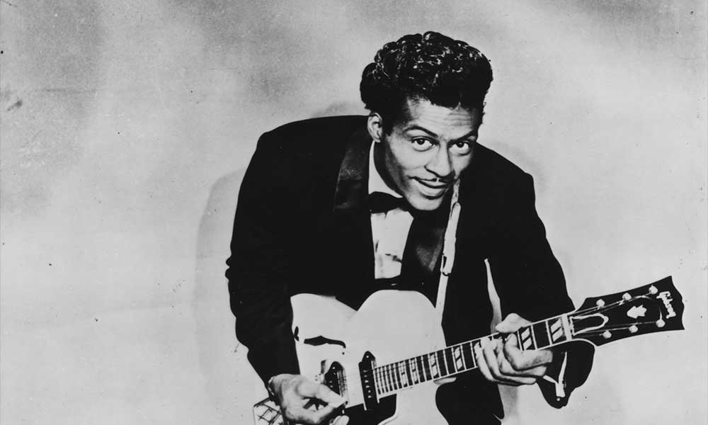

Chuck Berry

Born October 18, 1926 in St. Louis, Missouri. Died March 18, 2017 in Wentzville, Missouri.
Active from 1953-2017. One of the pioneers of rock.
Singer, songwriter, and revolutionary guitarist.
Biggest hits include Johnny B. Goode, Roll Over Beethoven, and You Can Never Tell.
Developed a style of performance that relied on guitar solos and showmanship, changing the future of music performance.
One of the first musicians inducted into the Rock and Roll Hall of Fame in 1986.